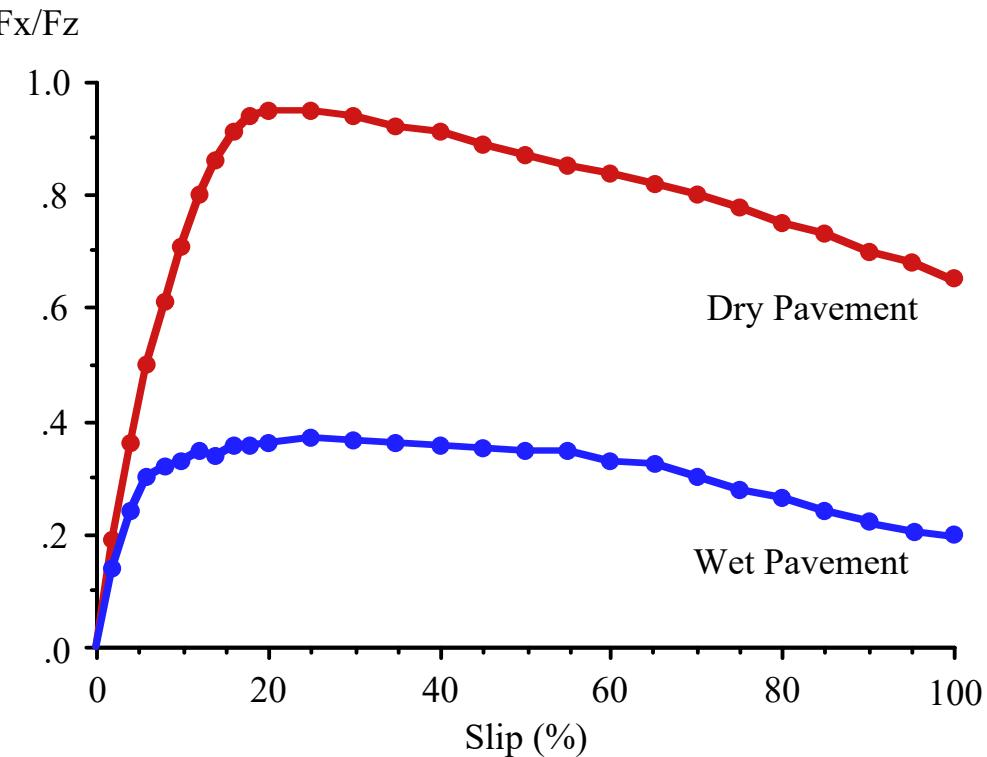
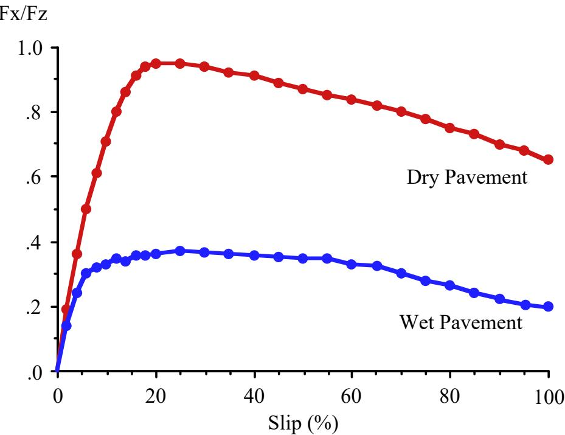
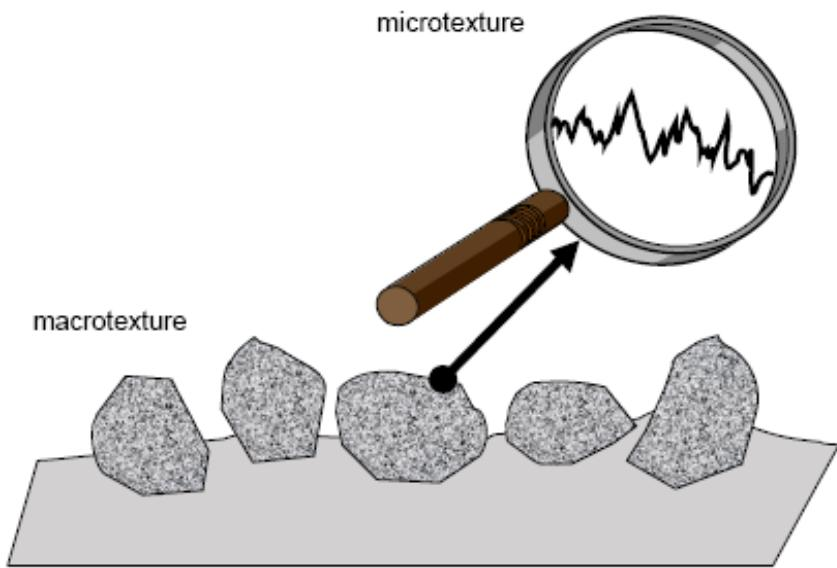
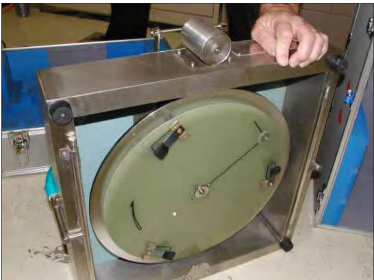
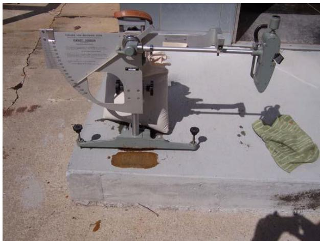
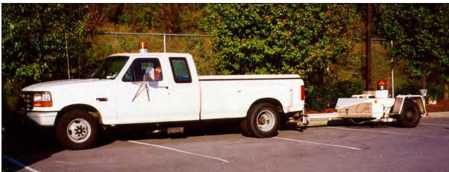
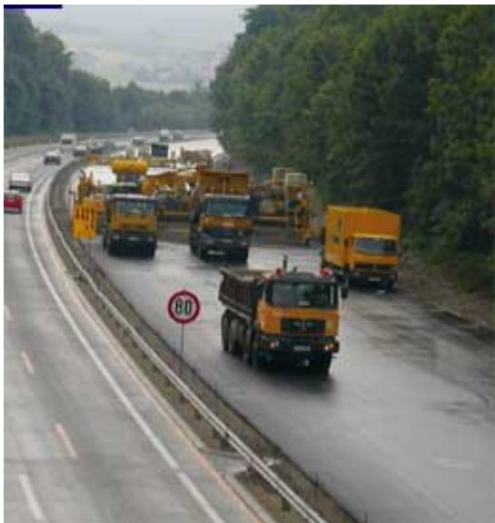
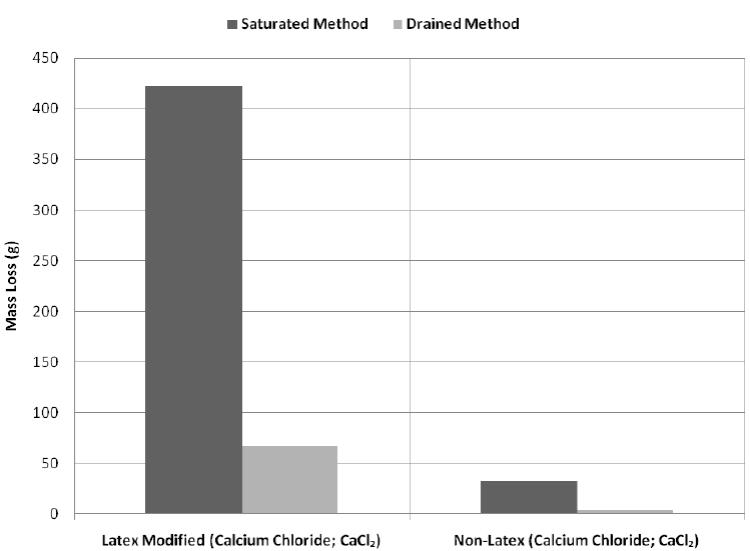

Pavement Friction
Pavement friction is a specific surface characteristic quantified by measuring skid resistance under wet conditions using the British Pendulum Number (BPN) [10]. This measurement is typically performed with a British Pendulum Tester in accordance with standard ASTM E303 procedures, which require the surface to be cleared of loose material and dust prior to testing [10]. The resulting BPN values provide a standardized metric for evaluating the friction properties of pavement surfaces [10]. Fundamentally, it represents the retarding force developed at the tire-pavement interface. Slip is defined as 100·(Vx − Rω)/Vx. Peak friction occurs at approximately 20% slip (typical range 5–30%). Locked-wheel (100% slip) friction is termed “skid resistance” for wet pavement. [1] The International Friction Index harmonizes microtexture and macrotexture into a single value, addressing the limitation of ASTM E-274 measurements which primarily sense adhesion from microtexture at low slip. [1], [2] This composite approach contrasts with high-slip conditions where macrotexture becomes critical for drainage and energy dissipation through tire tread deformation [2].
Sources (10)
Sub-concepts (1)
Mechanisms of Pavement Friction
Roadway safety relies on both microtexture and macrotexture; while microtexture provides adhesion at low slip to ensure skid resistance, macrotexture is essential for wet-pavement safety by providing drainage at high slip and dissipating energy through tire tread deformation [1]. Specifically, energy dissipation at high slip speeds occurs through the deformation of tire tread elements as they pass over coarse macrotexture [1].
 Influence of surface characteristics on vehicle performance. [1]
Influence of surface characteristics on vehicle performance. [1]
To optimize friction levels, anti-lock braking systems (ABS) are designed to maintain slip near 10%, as peak longitudinal force occurs at approximately 20% slip and drops significantly when wheels lock at 100% slip [1]. Furthermore, when a tire operates near its lateral force limit during cornering, its capacity to provide longitudinal braking force is drastically reduced [1].

Longitudinal force versus slip. [1]At low slip levels (near 0%), pavement friction is primarily transmitted via adhesion provided by microtexture, whereas at high slip speeds (approaching 100% locked-wheel conditions), macrotexture becomes critical for drainage and energy dissipation through tire tread deformation [2].

Longitudinal force versus slip [2]
Pavement surface texture categories of macrotexture and microtexture [2]Friction Measurement Devices and Standards
Four common types: (1) locked wheel (ASTM E-274), (2) fixed slip, (3) variable slip, (4) side force. The majority of US agencies use ASTM E-274 with a ribbed tire. The ribbed tire is sensitive primarily to microtexture (adhesion) and insensitive to macrotexture (drainage) — it may report artificially high skid resistance on pavements with insufficient drainage. [1]
The Friction Number, calculated as the force required to hold a locked tire divided by the wheel weight times 100, typically ranges between 40 and 70 for wet-weather conditions. [3]
Locked-wheel friction testing apparatuses spray water on the road surface ahead of the test wheel to simulate wet-weather conditions during measurement. [3]
Ribbed tires used in locked-wheel testing create large channels for water escape, making them insensitive to macrotexture drainage and potentially reporting artificially high skid resistance on pavements with insufficient drainage. [1]
Variable slip testers sweep through a range of slip values to generate an entire friction versus slip characteristic curve, unlike fixed slip devices that operate at a constant slip. [1]
Side force friction testers measure cornering force at a fixed yaw angle while the tire rolls freely, generally capturing friction data at low slip conditions. [1]
When using a smooth tire compliant with ASTM E 524 in locked-wheel testing, the apparatus assesses the combined effects of both macrotexture and microtexture on friction. This contrasts with ribbed tires, which are primarily sensitive to adhesion from microtexture. [4]

Dynamic friction tester [4]Pavement friction is quantified using the International Friction Index (IFI), which synthesizes measurements from both high-speed and low-speed testing devices into a single standardized metric. This composite index was developed to capture the influence of both microtexture, typically measured by locked-wheel skid trailers, and macrotexture, often assessed via surface texture meters, into one value [1]. By coupling these distinct measurement techniques, the IFI provides a more comprehensive evaluation of pavement friction than either method alone [4].
The British Pendulum Number (BPN) is used to quantify skid resistance, with European standard EN 1436 specifying a minimum BPN value of 45 for adequate safety performance. [5]
Skid resistance testing can be conducted using a British Pendulum, where a rubber slider slides across a surface from a horizontal release position to measure friction. [5]

British Pendulum for skid resistance [5]Factors Affecting Skid Resistance
Because wet pavement friction is significantly lower than dry pavement friction across all slip levels, wet-weather skid resistance serves as the primary metric for evaluating pavement safety [1]. Pavement friction measurements are sensitive to environmental conditions, such as surface temperature and the time elapsed since the last rainfall event, which can cause variations in recorded friction values and must be considered when interpreting friction data over time [4].

Locked wheel friction trailer [4]Furthermore, skid resistance values are sensitive to testing temperature, as lower temperatures generally result in reduced friction compared to room-temperature conditions [5]. Deicing agents can also alter pavement friction characteristics; specifically, some liquid products show lower friction than traditional salt solutions while still maintaining acceptable safety levels [5].
Friction-Noise Tradeoffs
The trade-off between friction and noise represents a central design challenge, as additional texture improves safety but may increase noise [1]. Because texture wear is most pronounced within the wheel paths due to traffic loading, noise measurements can be taken both straddling these paths and directly within them to isolate the effects of texture degradation, a spatial differentiation that helps clarify how localized wear impacts surface performance characteristics [4]. Field measurements across 213 textures showed drag texturing can provide comparable noise and friction to HMA; specifically, German burlap drag practice provides adequate friction and minimizes air pumping, though friction decreases over time from wear. While larger sand particles can extend texture life by up to six years, they can also reduce workability, and for longitudinal tining, ≥25% siliceous sand is recommended for durable friction capacity. Other methods include diamond grinding, which increased frictional capacity by 27% in an Arizona study while also reducing noise, and the use of exposed aggregate surfaces, which provide good friction with adequate texture depth (~0.9 mm) when constructed with polish-resistant aggregates (PSV >50) [2]. Furthermore, exposed aggregate concrete pavements are recognized as an innovative surface solution capable of reducing tire-pavement noise by an order of magnitude or more while maintaining adequate friction and drainage characteristics; these surfaces typically require a texture depth of approximately 0.9 mm and the use of polish-resistant aggregates with a Polished Stone Value (PSV) greater than 50 to ensure durable friction capacity [2]. Additionally, pervious concrete pavements can reduce noise levels by 3% to 10%, or up to five decibels, compared to standard portland cement concrete due to the open structure absorbing sound waves through differences in arrival times between direct and reflected waves [6].
 Texture after diamond grinding [2]
Texture after diamond grinding [2]
Analysis of Type 1 and 2 site data under Part 2 revealed no clear relationship between friction and noise, as pavements of virtually every nominal texture configuration can be both loud and quiet while having both high and low friction [4]. This finding demonstrates that quieter concrete pavements can be achieved without compromising skid resistance — a critical policy conclusion enabling noise-focused surface design [4].
Concrete Construction Methods
Two-lift concrete construction can improve wear resistance by using a harder aggregate in the top lift while placing a lower-quality or recycled material in the base layer [7]. A two-lift pavement configuration with a three-inch top lift on a nine-inch base lift, incorporating dowels placed within the bottom lift, has demonstrated high long-term success rates [7]. To ensure proper bonding and prevent the mixing of the two concretes, it is necessary to wait approximately 30 minutes between the placement of the first and second lifts [7]; furthermore, using a lower water-to-cement ratio in the top lift does not inherently cause debonding between the two layers when properly executed [7].

Two-lift paving in Austria (Source: http://www.walter-heilit-vwb.de/english/toechterg/wien.htm) [7]During construction, concrete mixture moisture content must be kept uniform during paving, as variations can directly affect the resulting tine depth and overall texture consistency [8]. To achieve specified mark depths without dragging materials to the surface, the shape, length, and stiffness of tining tools must be matched to specific concrete mix designs and field conditions [8]. Tining depths are typically recorded in thirty-secondths of an inch (0.794 mm) increments during construction, with measurements taken at 50-meter increments across test sections to ensure uniformity [8].
Pervious Concrete Properties and Performance
Pervious concrete pavements improve skid resistance by removing water during precipitation events, leveraging their high void ratios (typically 14% to 31%) and permeability (ranging from 36 inches/hour to 864 inches/hour) to prevent hydroplaning [6]. These pavements typically exhibit lower compressive strengths ranging from 800 psi to 3,000 psi compared to conventional concrete, which necessitates design thicknesses that are approximately 25% greater than standard pavement sections [6]. Because pervious concrete exhibits a linear decrease in compressive strength as void ratio increases while permeability increases exponentially—particularly accelerating at void ratios exceeding 25%—mixes with void ratios between 15% and 19% typically achieve seven-day compressive strengths of 2,900 to 3,300 psi alongside permeabilities ranging from 135 to 240 inches per hour [9].
 Relationship between pervious concrete void ratio, permeability, and seven-day compressive strength for all mixes placed using regular compaction energy [9]
Relationship between pervious concrete void ratio, permeability, and seven-day compressive strength for all mixes placed using regular compaction energy [9]
The splitting tensile strength of pervious concrete is approximately 12% of its compressive strength under regular compaction energy, though this ratio drops to about 9.5% when compaction energy is reduced [9]. Compaction also reduces split strength and unit weight while increasing permeability; for instance, reducing compaction energy at a 22% void ratio increases average permeability by 65%, from 372 inches per hour to 614 inches per hour [9]. Regarding maintenance, clogging by sand is effectively alleviated using dry vacuuming, whereas clogging caused by blended materials requires power washing followed by vacuuming [9]. Furthermore, fine-grained silty clay has almost no effect on water flow through specimens at typical stormwater concentrations, and sufficient permeability generally remains after clogging events to prevent operational issues [9].
Material Durability and Maintenance
The presence of deicing liquids can create a sealing effect on concrete surfaces, potentially slowing water absorption rates and altering the internal structure at the pavement skin [5]. In cold weather regions, drained test methods better simulate field conditions for evaluating deicer damage than saturated immersion tests, as the high permeability of pervious concrete allows chemicals to pass through rather than pond [9]. Within these environments, sodium chloride and calcium-magnesium acetate cause less damage than calcium chloride, and samples without latex polymer exhibit significantly less mass loss during freeze-thaw cycles [9]. Furthermore, Latex-modified concrete (LMC) exhibits superior freeze-thaw durability and resistance to scaling even when its air void system parameters do not meet conventional requirements, such as a void spacing factor of less than 0.200 mm or a specific surface greater than 23.6 mm-1 [10].

Mass change comparison of both deicer application methods at 54 cycles [9]Regarding mixture composition, larger aggregate sizes, such as No. 4 river gravel compared to 3/8-inch or 1/2-inch variants, produce concrete mixes with higher void ratios [9]. Additionally, mixes containing only sand yield a greater increase in strength than those combining sand and latex, while the inclusion of silica fume results in higher void ratios but lower strength compared to mixes without it [9].
See also
References
- S. M. Karamihas and J. K. Cable, "Developing Smooth, Quiet, Safe Portland Cement Concrete Pavements (March 2004)," Center for Portland Cement Concrete Pavement Technology, Iowa State University, Ames, IA, Rep. DTFH61-01-X-0002, 2004. [Online]. Available: https://publications.iowa.gov/2956/
- E. T. Cackler, T. Ferragut, and D. S. Harrington, "Evaluation of U.S. and European Concrete Pavement Noise Reduction Methods," National Concrete Pavement Technology Center, Iowa State University, Ames, IA, Rep. FHWA Project 15 (DTFH61-01-X-00042), 2006. [Online]. Available: https://www.cptechcenter.org/wp-content/uploads/2018/03/surface_characteristics_i.pdf
- S. Schlorholtz, B. Dawson, and M. Scott, "Development of In Situ Detection Methods for Materials-Related Distress (MRD) in Concrete Pavements: Phase 1," Center for Portland Cement Concrete Pavement Technology, Iowa State University, Ames, IA, Rep. CTRE 00-96, 2003. [Online]. Available: https://www.intrans.iastate.edu/wp-content/uploads/2018/03/mrd.pdf
- T. Ferragut, R. O. Rasmussen, P. Wiegand, E. Mun, and E. T. Cackler, "ISU-FHWA-ACPA Concrete Pavement Surface Characteristics Program Part 2: Preliminary Field Data Collection," National Concrete Pavement Technology Center, Ames, IA, 2007. [Online]. Available: https://www.intrans.iastate.edu/research/completed/concrete-pavement-surface-characteristics-proj-15-part-2/
- F. Bektas, J. Cao, and P. Taylor, "De-Icing Agent Performance Evaluation," National Concrete Pavement Technology Center, Ames, IA, 2013. [Online]. Available: https://www.intrans.iastate.edu/wp-content/uploads/2018/03/deicing_agent_perf_eval_w_cvr.pdf
- V. R. Schaefer, K. Wang, M. T. Suleiman, and J. T. Kevern, "Mix Design Development for Pervious Concrete in Cold Weather Climates," CTRE, Iowa State University, Ames, IA, 2006. [Online]. Available: https://www.perviouspavement.org/downloads/Iowa.pdf
- J. K. Cable and D. P. Frentress, "Two-Lift Portland Cement Concrete Pavements to Meet Public Needs," Center for Transportation Research and Education, Iowa State University, Ames, IA, Rep. DTF61-01-X-00042 (Project 8), 2004. [Online]. Available: https://www.intrans.iastate.edu/wp-content/uploads/2020/10/two_lift.pdf
- P. Wiegand, J. K. Cable, S. Reinert, and T. Tabbert, "Iowa Data Collection and Analysis for the 2005-2006 National Surface Characteristics Field Experiment Plan," CTRE, Iowa State University, Ames, IA, Rep. TR-537, 2005. [Online]. Available: https://www.intrans.iastate.edu/wp-content/uploads/2018/03/surface_char.pdf
- V. R. Schaefer and J. T. Kevern, "An Integrated Study of Pervious Concrete Mixture Design for Wearing Course Applications," National Concrete Pavement Technology Center, Ames, IA, 2011. [Online]. Available: https://www.intrans.iastate.edu/wp-content/uploads/2018/03/pervious_overlay_report_w_cvr.pdf
- K. Wang, B. M. Shankaramurthy, A. Anand, Y. Sargam, K. Freeseman, and B. Phares, "Performance Evaluation of Very Early Strength Latex-Modified Concrete (LMC-VE) Overlay," Institute for Transportation, Iowa State University, Ames, IA, Rep. TR-771, 2024. [Online]. Available: https://bec.iastate.edu/wp-content/uploads/2024/10/performance_evaluation_of_LMC-VE_overlay_w_cvr.pdf
Feedback on this page